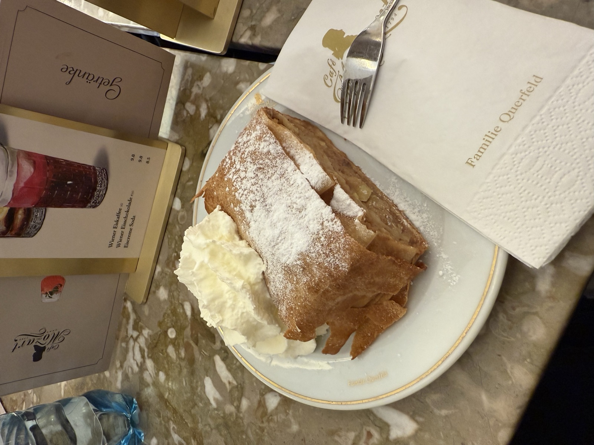
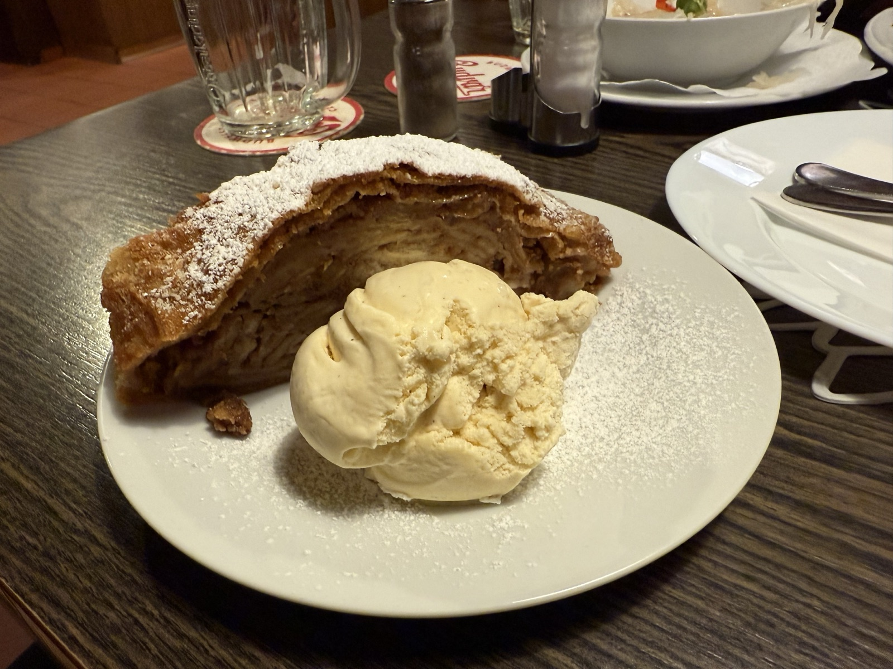
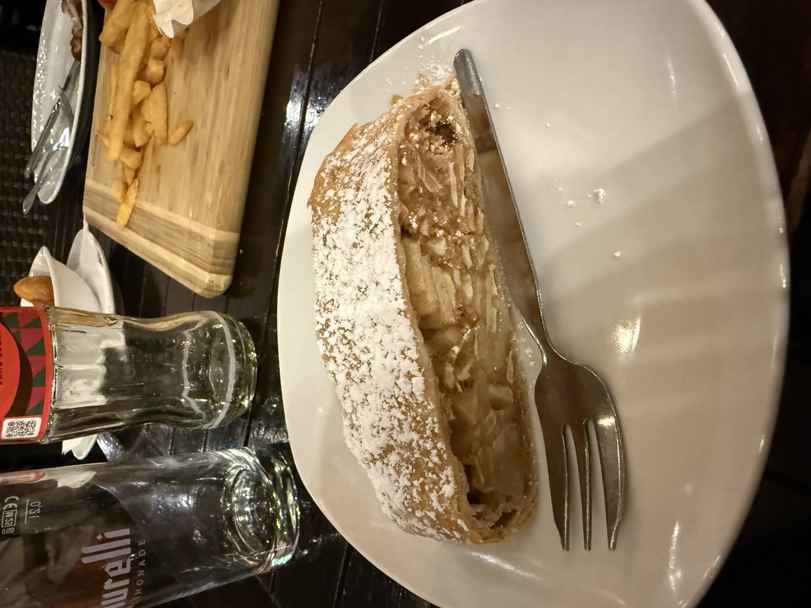
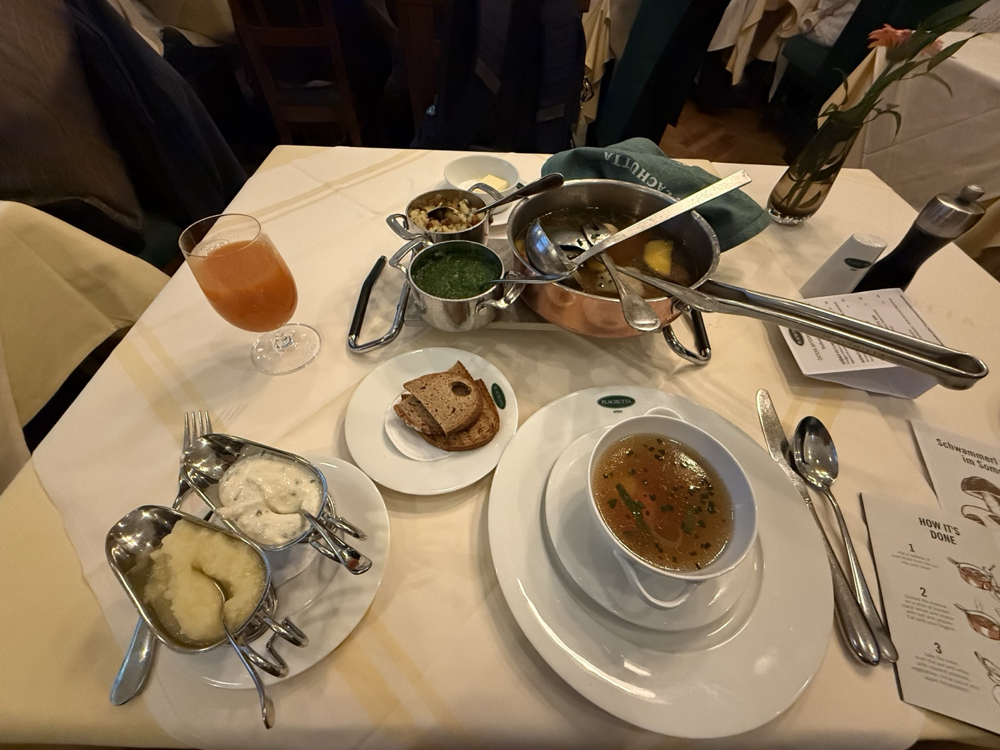
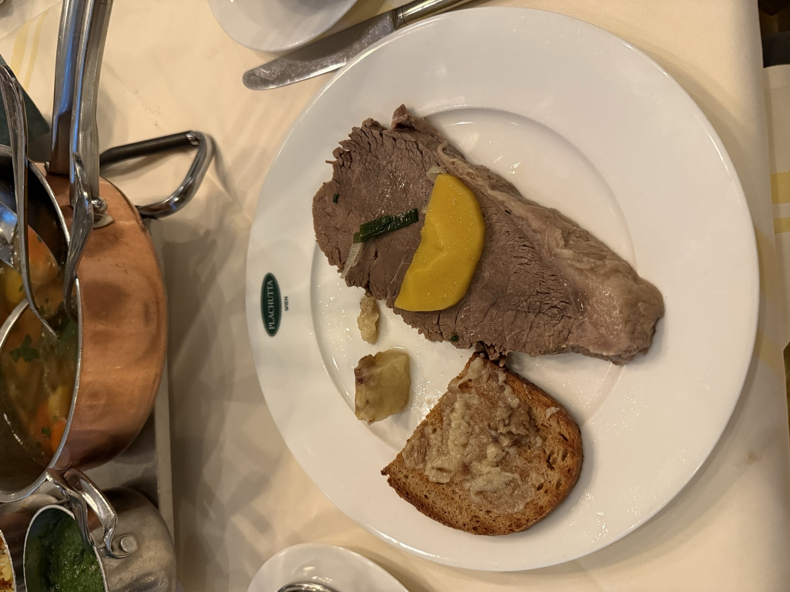
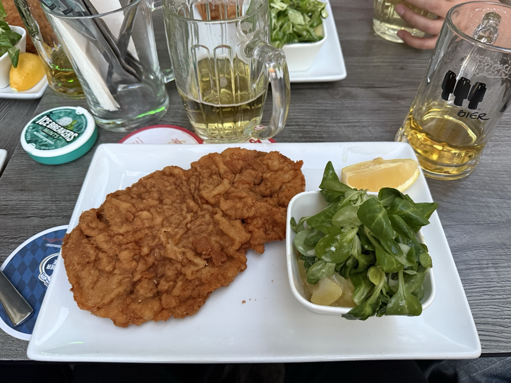

Food
The strudel, though.
June 2026Henrik Karlsson writes that you don't look for love, you look for Alice. A singular person. You can't define her in advance. You'll know when the inside of your head suddenly feels like somewhere worth living in.
I spent a week in Vienna. I found Apfelstrudel.
Every day, sometimes twice a day. Café Mozart, Anker, Chili & Cheesy, ICRA buffet, Böhmerwald, Zum Englischen Reiter, wherever I happened to be standing when the craving hit, which was always. The pastry pulled paper-thin, warm apple and cinnamon inside, whipped cream or vanilla ice cream on the side. After the third one I stopped justifying it to myself and just ordered. I sat under vaulted ceilings where Trotsky used to play chess, read, and ate strudel.
I leave today. I attended ICRA, ate Tafelspitz at Plachutta, walked the Ringstrasse at dusk, didn't find Alice.
The strudel, though. The strudel I would come back for.



Tafelspitz, at Plachutta


This was the one I went in expecting to love without reservation, since it's basically the reason the restaurant exists, and I came out more critical of it than I expected to be. The beef itself was tender, sliced thin, plated with all the classic sides: apple horseradish, chive sauce, roasted potatoes, a piece of bone marrow on toast. But set next to everything else I ate that week it came up short on depth. There's barely any seasoning beyond the broth it's cooked in, which I understand is the entire point of the dish, but it left the meat tasting good without ever feeling hearty or particularly satisfying.
The bone marrow on toast was the part that stuck with me, oddly for the wrong reasons. It was fatty in a very straightforward way, almost too simple, and yet something about how plain it was worked in its favor. I kept picking at it after I'd already decided I didn't need more, which probably says more about the dish than my first complaint did.
Wiener Schnitzel

This was the one dish that fully lived up to its reputation, no notes. The crust had exactly the crunch you want, thin and crisp without turning greasy, and underneath it the veal actually tasted like veal instead of just being a vehicle for breading. A squeeze of lemon cut through the fried crust just enough, the meat itself was only lightly salted so nothing overpowered anything else, and it went down easy with the greens on the side. The beer helped too, though by that point in the trip the beer was helping everything.